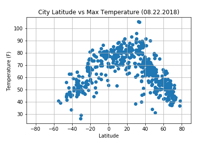

Summary: Latitude vs X

The purpose of this project is to analysis how the weather changes as one travels closer to the equator. To accomplish this analysis, I used the Open Weather API and the CitiPy Python Library to randomly pull 531 cities from around the world to create a dataset.
After I assembled this data, I used the Pandas and Matplotlib Python libraries to analyze the data set. The four dependent variables were: max temperature, humidity, cloudiness, and wind speed. This dashboard shows the source data and the visualizations based on these four dependent variables. The data was pulled for the date of August 22nd, 2018